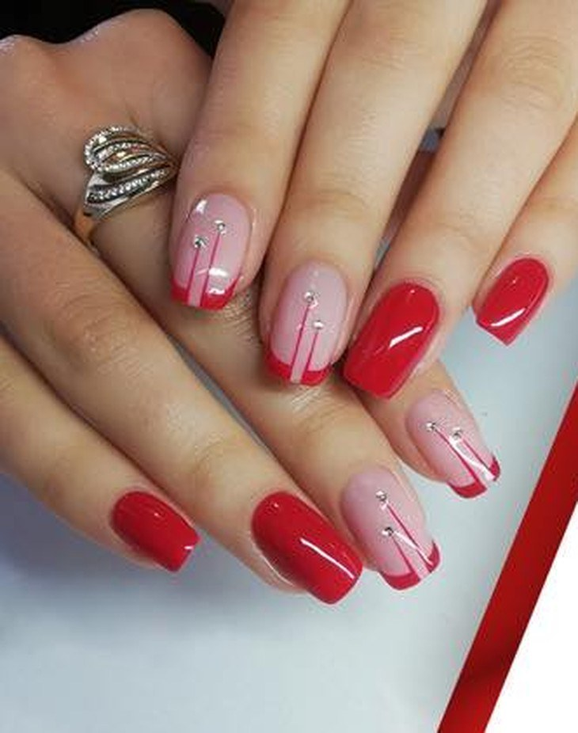
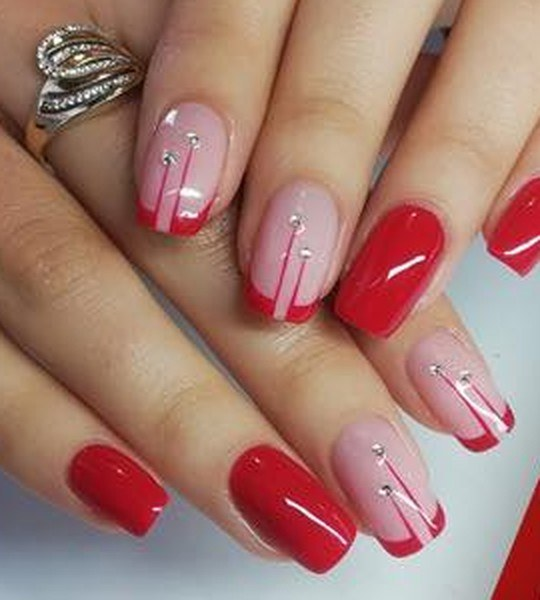

Нокти с класа — червено, което остава.
Траен гел лак, изчистена форма и авторски дизайн с малки блестящи детайли. Маникюр и педикюр в сърцето на Русе — с грижа за всеки нокът.

Маникюр и педикюр с внимание към детайла.
При Йонка Цонева в Русе всеки маникюр започва с чиста, добре оформена основа и завършва с траен гел лак, който издържа на всекидневието. От изчистена класика до наситено червено и фини блестящи акценти.
Салонът предлага маникюр и педикюр с грижа за кожичките и здравето на ноктите — спокойна атмосфера и личен подход към всяка клиентка.
Доверието на клиентите говори само за себе си: 94% препоръка и над 2 100 харесвания във Facebook.

Какво предлагаме
Грижа за ноктите на ръцете и краката — за всеки ден и за специалния повод.
Маникюр & гел лак
Оформяне, грижа за кожичките и траен гел лак в цвят по избор — спретнат и издръжлив маникюр за всеки ден.
Педикюр
Грижа за стъпалата и ноктите на краката с гел лак — чист, поддържан и удобен резултат.
Авторски дизайн
Френски маникюр, наситено червено, нюдови преходи и фини камъчета — дизайн, съобразен с твоя стил.
Клиентите, които ни препоръчват
Работим за доволни клиенти, които се връщат и препоръчват салона на приятели. Ето какво носи всяко посещение при нас:
-
Траен резултатГел лак, който издържа — без бързо ронене и напукване.
-
Чиста и прецизна работаВнимание към формата, кожичките и всеки детайл.
-
Личен подходСпокойна атмосфера и дизайн, съобразен с теб.
„Всеки нокът — малко бижу.“
Намери ни в Русе
Телефон
Имейл
Град
Русе, България
Часовете и точния адрес потвърждаваме по телефона или във Facebook.
Картата показва Русе. Точното местоположение изпращаме при записване.